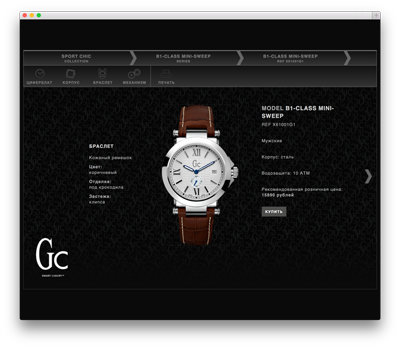
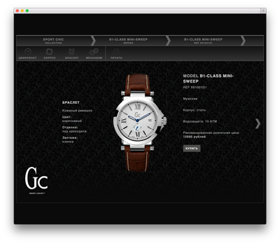

My work
I began working as an HTML coder in 2005 . In two years, as it usually happens with HTML coders, I learned JavaScript and devoted myself entirely to programming. Gradually I also learned a complete set of server technologies: programming languages (PHP, Python), databases (MySQL, PostreSQL), configuring servers and so on. You can get more information about my experience in my CV.
My hobbies
Web development is not only a job for me, it’s my hobby as well. I regularly read a lot of thematic blogs, develop my own projects and contribute to open source projects.
Besides, I like to travel. By car, on foot, by plane or by train, across Russia and abroad, in a tent or in a hotel — it doesn't matter. The main thing is to get pleasure from all stages: from planning the trip to returning home in wet boots and with a torn backpack.
In my spare time I read books, watch TV shows and improve my English. Also I'm a husband and a father.
Education
I graduated from Moscow State University (Chemical department, 2001 — 2007).
 Rememba
Application for expanding vocabulary
My contribution: frontend code of application (Backbone/Marionette) and tests (CasperJS/PhantonCSS).
Rememba
Application for expanding vocabulary
My contribution: frontend code of application (Backbone/Marionette) and tests (CasperJS/PhantonCSS).
 Edox Russia
Edox watches in Russia
My contribution: frontend (HTML/CSS, jQuery) and backend (CMS Correct).

GC Watches
GC Watches in Russia
My contribution: frontend (HTML/CSS, jQuery) and backend (CMS Correct).
Edox Russia
Edox watches in Russia
My contribution: frontend (HTML/CSS, jQuery) and backend (CMS Correct).

GC Watches
GC Watches in Russia
My contribution: frontend (HTML/CSS, jQuery) and backend (CMS Correct).